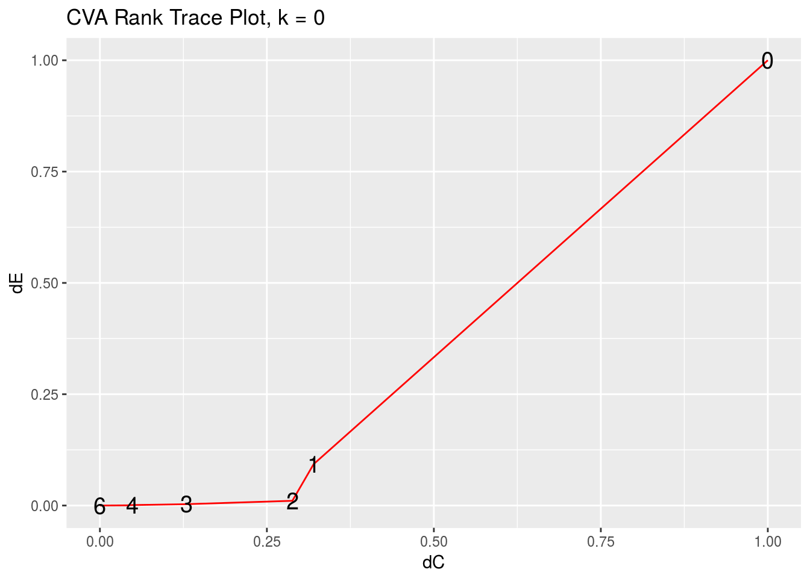
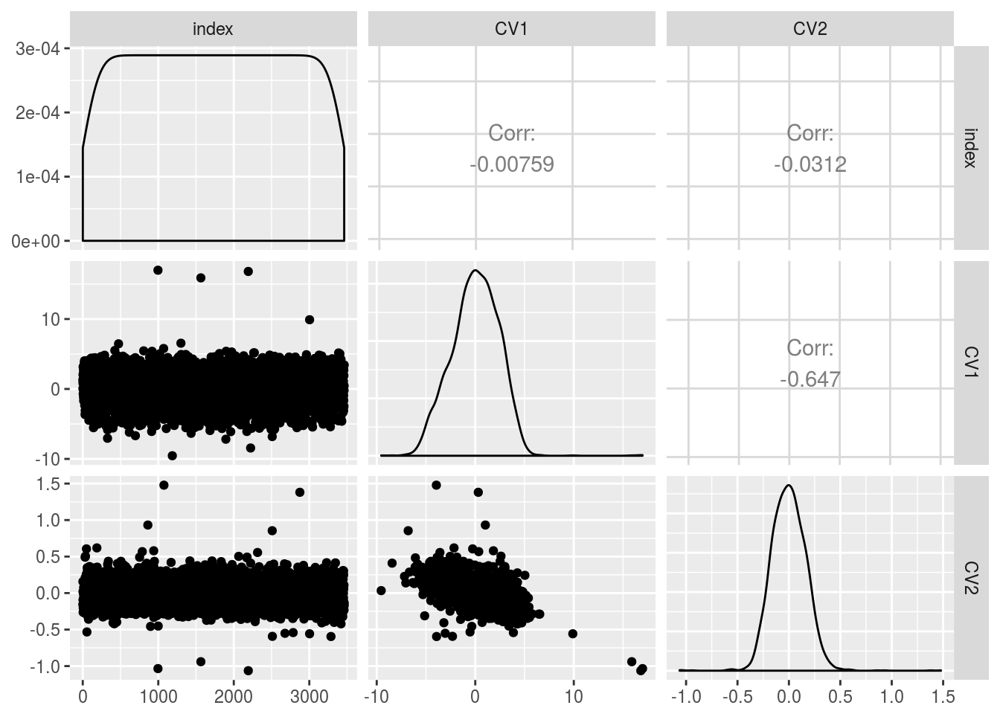

rrr for Canonical Variate Analysis
Chris Addy
2016-11-23
### COMBO-17 galaxy data
data(COMBO17)
galaxy <- as_data_frame(COMBO17) %>%
select(-starts_with("e."), -Nr, -UFS:-IFD) %>%
na.omit()
#glimpse(galaxy)galaxy_x <- galaxy %>%
select(-Rmag:-chi2red)
galaxy_y <- galaxy %>%
select(Rmag:chi2red)GGally::ggcorr(galaxy_x)
GGally::ggcorr(galaxy_y)
rrcva(galaxy_x, galaxy_y, rank = 2, k = 0.0001)## $mean
## [,1]
## [1,] 28.5758595
## [2,] 1.1416761
## [3,] 26.8773036
## [4,] -1.0773373
## [5,] -0.9708813
## [6,] 2.1706106
##
## $G
## UjMAG BjMAG VjMAG usMAG gsMAG rsMAG
## [1,] -3.4955242 0.037310962 -10.8433648 7.1339593 3.3412863 8.5723787
## [2,] -0.6972705 0.008097572 -0.7646793 0.2353707 0.2904396 0.4900924
## UbMAG BbMAG VnMAG S280MAG W420FE W462FE
## [1,] -4.3052097 -0.03718421 -0.2110797 0.138086030 -42.481435 -21.0100809
## [2,] 0.3679416 -0.01174696 -0.0147611 0.006272902 -2.063223 -0.8301718
## W485FD W518FE W571FS W604FE W646FD W696FE
## [1,] -3.8027878 22.172917 7.536038 9.0246317 -0.01623045 -13.3499598
## [2,] 0.6688958 1.441732 0.748207 0.9588788 -1.22865902 -0.5368493
## W753FE W815FS W856FD W914FD W914FE
## [1,] 10.4357204 -21.374371 -3.0846070 6.8028759 3.077942
## [2,] 0.1941534 -1.571229 -0.1908752 0.4460744 0.482540
##
## $H
## [,1] [,2] [,3] [,4] [,5] [,6]
## [1,] 1.393628 0.2152962 1.05029261 0.09907834 0.1163168 0.001492865
## [2,] -0.056319 -0.1006128 0.07668806 0.31445414 0.3126231 -0.148927283
##
## $eigen_values
## [1] 4.618356e+00 3.604890e-02 2.240845e-03 4.643283e-04 3.348058e-05
## [6] 6.807151e-06cva_rank_trace_plot(galaxy_x, galaxy_y)
cva_rank_trace_plot(galaxy_x, galaxy_y)
cva_residual_plot(galaxy_x, galaxy_y, rank = 2, k = 0.001)
cv_pairwise_plot(galaxy_x, galaxy_y, cv_pair = 1, k = 0.0001)
cv_pairwise_plot(galaxy_x, galaxy_y, cv_pair = 2, k = 0.0001)